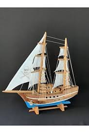
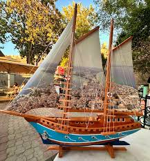
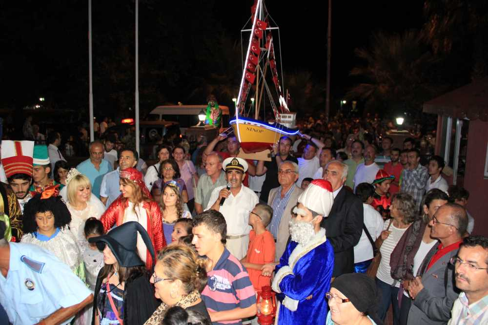

Tarihi ve Kültürel Miras
Sinop, tarih boyunca Karadeniz’in önemli liman kentlerinden biri olmuştur ve bu konumu, kültürel çeşitliliğini ve zenginliğini şekillendiren temel faktörlerden biridir. Antik çağlardan Osmanlı dönemine kadar farklı uygarlıklara ev sahipliği yapan şehir, bu tarihsel birikimini mimarisi, gelenekleri ve yaşam tarzıyla yansıtır. Sinop’un kültürel yapısını anlamak için şehrin tarihi, el sanatları, mutfağı ve sosyal yaşantısı gibi unsurlarına yakından bakmak gerekir.
Tarihi miras açısından, Sinop’un köklü geçmişi, şehirdeki yapıların dokusunda hissedilir. Sinop Kalesi, kentin M.Ö. 7. yüzyıldan itibaren stratejik bir savunma merkezi olduğunu gösterir. Kale, yalnızca askeri bir yapı olmanın ötesinde, Sinop’un deniz ticaretindeki önemini de simgeler. Bu stratejik önem, Roma, Bizans ve Selçuklu dönemlerinde de devam etmiştir. Örneğin, Pervane Medresesi, Selçuklu mimarisinin zarafetini yansıtırken, Balatlar Kilisesi, şehrin Hristiyanlık tarihiyle olan bağını ortaya koyar. Bunun yanı sıra, Sinop Cezaevi, hem tarihi hem de edebi bir miras olarak büyük bir öneme sahiptir. Sabahattin Ali gibi ünlü yazarların burada geçirdiği zamanlar, eserlerinde Sinop’un melankolik ve huzurlu atmosferini yansıtır.
Sanat ve El Sanatları
El sanatları, Sinop’un kültürel kimliğinin temel unsurlarından biridir ve özellikle ahşap oyma sanatıyla öne çıkar. Şehirde üretilen ahşap sandalyeler, masalar, süs eşyaları ve oyuncaklar, el emeği ve büyük bir ustalıkla hazırlanır. Bunun yanı sıra, Sinop’un köklü denizcilik geleneği de kültürel yaşamda önemli bir yer tutar. Minyatür gemi yapımı (kotra) sanatı, bu geleneğin sanatsal bir yansımasıdır ve bölgenin denizle olan güçlü bağını gözler önüne serer. Denizcilik, Sinop’un yalnızca el sanatlarında değil, genel kültüründe de derin izler bırakmıştır. Bu bağ, şehrin futbol takımı Sinopspor’un logosunda dahi kendini göstermektedir. Tüm bu unsurlar, Sinop’un kültürel belleğini şekillendiren ve gelecek nesillere taşıyan önemli değerlerdir.


Festivaller ve Etkinlikler
Sinop, yıl boyunca çeşitli kültürel etkinliklere ev sahipliği yapmaktadır. Uluslararası Sinop Bienali (Sinopale) gibi çağdaş sanat etkinlikleri, şehre renk katmaktadır. Ayrıca, Helesa Şenliği gibi geleneksel festivaller, Sinop'un kültürel zenginliğini kutlamak için düzenlenmektedir.

Gastronomi
Sinop mutfağı, Karadeniz’in tipik lezzetlerini barındırırken, kendine has dokunuşlarla öne çıkar. Sinop mantısı, Türkiye’nin diğer bölgelerindeki mantı türlerinden farklı olarak cevizle hazırlanır ve üzerine yoğurt dökülerek servis edilir. Bu benzersiz lezzet, Sinop’un yerel mutfağını ülke genelinde tanınır hale getirmiştir. Bunun yanı sıra, mısır çorbası, hamsili pilav ve hamsi buğulama gibi yemekler, hem Karadeniz’in denizle olan bağını hem de bölgenin tarımsal geleneklerini yansıtır. Sinop’ta yemek, yalnızca bir ihtiyaç değil, aynı zamanda sosyal bir etkinliktir. Büyük sofralarda bir araya gelen aileler ve dostlar, geleneksel yemeklerin keyfini paylaşarak toplumsal bağları güçlendirir.